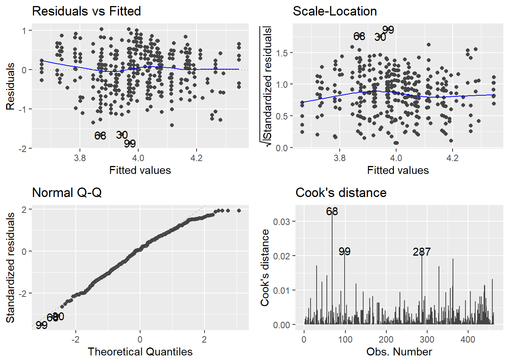
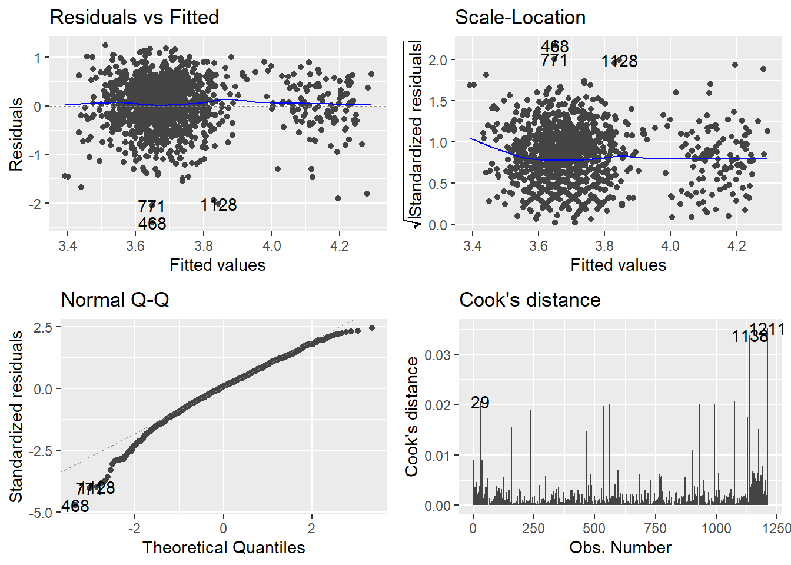
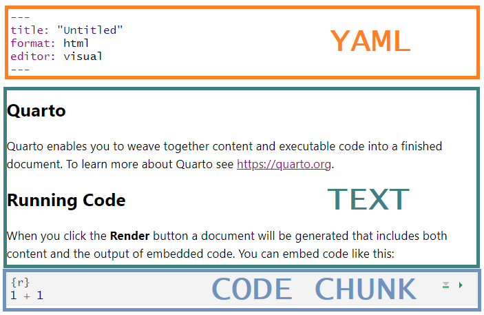

This tutorial first covers how to run, inspect, and report a linear model in R. We will then look at how to take that code and put together a reproducible document.
The Linear Model
In this section, we will walk through the process of fitting, comparing, and reporting hierarchical linear models in R. This is not a statistics tutorial, so there will be minimal detail about how to understand or interpret the output of these commands. Instead, refer to Prof Andy Field’s {discovr} tutorials, which are the primary teaching materials for the same content in UG teaching at Sussex. All of the code and interpretation in the following section is from discovr_08, the GLM.
There are two key goals for this linear model walkthrough:
Create a detailed “cheatsheet” for a linear model analysis for future reference
Get familiar with the {discovr} tutorials
Of the two, the first is more important. I’d strongly recommend you open the relevant {discovr} tutorial and skim through it as you go so you’re familiar with what it contains. However, the following sections of this tutorial will present the same code and information with very abbreviated text, to serve as a quick reference.
You can also have them both open at once and refer to each!
Installing {discovr}
If you are working in the Posit Cloud workspace, the tutorials have already been installed. Please do NOT reinstall them!
If working elsewhere, use the following code to install the necessary packages in the Console:
Note that there’s no need to call library(discovr) at the start of your document, since the tutorials don’t work in the document, but rather in RStudio itself.
Using the {discovr} tutorials
Prof Andy Field’s {discovr} tutorials provide detailed walkthroughs of both the R code and the statistical concepts of a variety of statistical analyses. They are a good place to look first to understand what your UG supervisees or advisees have been taught on a particular topic.
The tutorials are built in {learnr}, an interactive platform for learning and running R code. So, unlike the tutorial you’re currently reading, they must be run inside an R session.
To start a tutorial, open any project and click on the Tutorial tab in the Environment pane. You can run any tutorial from here, but the relevant one for the linear modelling we are working on now is discovr_08, “the GLM”. Scroll down to this tutorial and click the “Start Tutorial ▶️” button to load the tutorial.
Because {discovr} tutorials run within R, you don’t need to use any external documents; you can write and run R code within the tutorial itself. However, I strongly recommend that whenever you work with these tutorials, you write and run your code in a separate document, otherwise you will have no record of the code and output.
Data and Codebook
Today’s data is the TeachingRatings dataset from the {AER} package. This dataset is built into the package, so you don’t need to read it in from anywhere.
Exercise
Use the code below to get the data and rename it teach_tib (not necessary, just easier to type!).
As usual, no need to install anything on the Cloud, but elsewhere install {AER} first in the Console:
install.packages("AER")
You can load the codebook in the Help viewer by running the following in the Console:
?AER::TeachingRatings
One Predictor
Now that we have some data, we can fit our first model with a single predictor. We will do this with the very hardworking lm() function in R, standing for “linear m odel”.
General Format
The lm() function has a lot of options (as you might expect, given the versatility and ubiquity of linear models!), but its basic format to fit a linear model with a single predictor is very simple:
lm(outcome ~ predictor, data = dataset_name)
In this function, outcome ~ predictor is a formula expressing a (simplified version of) the linear model equation. Here, outcome is the name of the variable in dataset_name that contains the outcome or dependent variable y, and predictor is the name of the variable that contains the predictor or independent variable x.
Using the Codebook, let’s begin by fitting a linear model predicting teaching evaluation score from beauty ratings. As we will be making frequent use of it, we will also store the resulting model in a new object, using the convention of adding _lm to the end of the object name to denote a LM model object.
eval_lm <-lm(eval ~ gender, data = teach_tib)
Now we have a new object that contains all the information about our model. We could simply call the name of this object, but the output doesn’t tell us anything besides the actual value of the b estimates (try it if you like). Instead, we’ll use some useful functions from the {tidyverse} package {broom} to get the information we need.
Model Fit
To get some common measures of model fit, we can use the function broom::glance(). The output includes \(R^2\), adjusted \(R^2\), and F and accompanying statistics in comparison to the null model (the mean of the outcome alone).
broom::glance(eval_lm)
Helpfully, broom::glance() (and many other {tidyverse} functions) output tibbles, which means we can work with them as we already know how to do.
Model Parameters
The most common technique for getting a look at the details of the model is to use a function we’ve met before: summary(). The output isn’t great, but it does let us get a whole bunch of useful information quickly and directly.
summary(eval_lm)
Call:
lm(formula = eval ~ gender, data = teach_tib)
Residuals:
Min 1Q Median 3Q Max
-1.96903 -0.36903 0.03097 0.43097 0.99897
Coefficients:
Estimate Std. Error t value Pr(>|t|)
(Intercept) 4.06903 0.03355 121.29 < 2e-16 ***
genderfemale -0.16800 0.05169 -3.25 0.00124 **
---
Signif. codes: 0 '***' 0.001 '**' 0.01 '*' 0.05 '.' 0.1 ' ' 1
Residual standard error: 0.5492 on 461 degrees of freedom
Multiple R-squared: 0.0224, Adjusted R-squared: 0.02028
F-statistic: 10.56 on 1 and 461 DF, p-value: 0.001239
Significance Codes
The output from many base-R {stats} functions, like this summary() output, include a line labeled Signif. codes that provide a key for understanding the notation given for significance levels in p-values.
Reading the key from left to right, we can see that a result is given three asterisks (***) when the p-value is between 0 and .001; two asterisks between .001 and .01; and so on.
This can be a useful visual check, especially because p-values that are very, very small are frequently expressed in scientific notation, which can make them more difficult to spot.
To get information about the b estimates for individual predictors, we can also use the function broom::tidy(). We could run this function without any other information, as we did with glance() above, but we’ll change one argument here in order to get 95% confidence intervals for b in the output as well.
The CIs are an improvement over summary(), and this information is a tibble rather than just text output, which makes it much easier to work with and report programmatically.
broom::tidy(eval_lm, ## Include confidence intervalsconf.int =TRUE)
MoRe About: What is the ‘statistic’?
You might notice that the output from glance() and tidy() give quite generic column names. Both include a column called “statistic”, and it’s not immediately clear at a glance which of the many test statistics this might be.
Just as a reminder, the “statistic” in the glance() output is the F-statistic for the test comparing the given model to the null model (with no predictors); and the “statistic” in the tidy() output is the t-statistic for the test comparing each b-value to 0.
You can get to this in the help documentation, but it’s a few levels down in the documentation for each function under “Methods”. Since we’re using each of these generic functions on the lm class of object, you’ll need to look under (or search the help documentation for) glance.lm and tidy.lm to get the specific information about the output for linear models.
One thing to notice immediately is that we have easily included a categorical variable gender in the model. R clearly has no problem with this and happily produces the output. But how can we interpret the genderfemale term?
First, for categorical variables, R will automatically assign a baseline or reference category which will depend on the type of data that you have. Here, our gender variable is already a factor, which is a good thing:
teach_tib |> dplyr::pull(gender) |>class()
[1] "factor"
Why is the factor data type a good thing? For factors, R will always set the reference category to be the first level of this factor. If we have a look at the factor levels:
teach_tib |> dplyr::pull(gender) |>levels()
[1] "male" "female"
We can see that the levels are ordered “male” first and “female” second. This means “male” is the baseline or reference category.
So, what is up with the genderfemale term in the output? The b in our linear model output quantifies the mean change in the outcome between categories. So, specifically here, mean teaching evaluations change by -0.17 when we change from looking at male teachers to female teachers. The name of the term is concatenated from the name of the predictor (gender) and the category we are changing to (female) from the baseline. Unfortunately, the baseline category is not explicitly stated in the output!
RepRoducibility: Order of Categories
Above we said that it was a “good thing” that the categorical gender variable is a factor variable. This is because factors are the “correct” data type for categorical data in R - “correct” as in best practice. To see why, let’s look at a situation where we instead have gender as a character variable type.
First, let’s create a new character version of the gender variable, which will remove all the information about factor levels leaving only the strings behind.
Now, let’s fit the same model as above, but with the new character version of the gender variable, and have a look at it.
teach_tib |># Fit the model using the character variablelm(eval ~ gender_chr, data = _) |># Pass the model to tidy broom::tidy(conf.int =TRUE)
In this output, the reference category has switched, and is now female. This is because for character data, R assigns the baseline category alphabetically, and “f” (for “female”) comes before “m” (for “male”). The b for the same row has the same value, but is now positive instead of negative. This is because we have only two categories in this variable, but for variables with more than two categories, this could have completely changed the analysis we were doing!
This is why, although R can do linear modeling with character variables, it’s strongly recommended to always turn categorical variables into factors. This allows you to set the comparisons you want to make, instead of trusting R to make the decisions for you; and reduces the risk of your analysis and results changing unexpectedly due to easily missable metadata niggles.
We’ll look at another example of this when we talk more further down about reproducible analysis.
Hierarchial Models
Next, we may want to test the addition of further predictors in the model. We can then compare the more complex multi-predictor model to the single-predictor model.
So, let’s fit a linear model with teaching evaluations as the outcome, and both beauty ratings and gender as predictors, save the model output in a new object called eval_full_lm, and obtain fit statistics and model parameters. To add a new predictor, we need only add it (+) to the formula.
## Fit a new model with two predictorseval_full_lm <-lm(eval ~ gender + beauty, data = teach_tib)## Simple output with summarysummary(eval_full_lm)
Call:
lm(formula = eval ~ gender + beauty, data = teach_tib)
Residuals:
Min 1Q Median 3Q Max
-1.87196 -0.36913 0.03493 0.39919 1.03237
Coefficients:
Estimate Std. Error t value Pr(>|t|)
(Intercept) 4.08158 0.03293 123.94 < 2e-16 ***
genderfemale -0.19781 0.05098 -3.88 0.00012 ***
beauty 0.14859 0.03195 4.65 4.34e-06 ***
---
Signif. codes: 0 '***' 0.001 '**' 0.01 '*' 0.05 '.' 0.1 ' ' 1
Residual standard error: 0.5373 on 460 degrees of freedom
Multiple R-squared: 0.0663, Adjusted R-squared: 0.06224
F-statistic: 16.33 on 2 and 460 DF, p-value: 1.407e-07
## Tibble output and CIs with broombroom::glance(eval_full_lm)
broom::tidy(eval_full_lm, conf.int =TRUE)
What About Interactions?
The models we’re describing here contain only additions, not interactions. So, you may be wondering, “What if I want to model more complex relationships between predictors?” If that’s what you’re trying to do now, you may want to jump ahead to discovr_10 for moderation and mediation.
Otherwise, we will get there in this course eventually!
Comparing Models
Now we have two models, one simpler with only a single predictor, and the other with two predictors. We might next want to test whether the more complex, two-predictor model is a significant improvement over the simpler model, in order to decide which model to retain. We can do this with the anova() function1 to compare the two models.
Warning
The anova() function will only work for model comparison for particular models.
The models must be hierarchical. That is, the more complex model(s) must contain all of the predictor(s) present in the less complex model(s).
All models must be fit to the same dataset. If, for example, your first predictor has no missing values, but your second predictor had one, the model with using the second predictor would have been fit to a dataset of a different size than the model using only the first, and the anova() function will throw an error to this effect.
To compare the two models, we put both model objects into the anova() function to find out which model to retain.
anova(eval_lm, eval_full_lm)
The F-test is significant, indicating that the more complex two-predictor model is a significant improvement over the one-predictor model, so we will proceed with the two-predictor model.
Standardised Bs
You may have noticed that the output we’ve seen so for only contains unstandardised model parameter estimates. If we want standardised Bs expressing the relationship between predictor(s) and outcome in standard deviation units, we can make use of the model_parameters() function from the {parameters} package to standardise our bs. To do this, we can use the standarize = "refit" argument, which will convert the bs.
Note the spelling of standardize with a “z”! Spelling it with an “s” will not rescale the parameter estimates.
Assumptions Checks
At Sussex, we teach a range of model diagnostics and robust model sensitivity tests in order to test model assumptions. We will look briefly at each of these in turn.
Tip
Remember, there are more examples and longer explanations in the discovr_08 tutorial!
Residual Plots
To begin, we can generate nicely formatted, customisable residual plots, using the function ggplot2::autoplot(). However, it is essential to load the {ggfortify} package in order for this to work.
library(ggfortify)ggplot2::autoplot(eval_full_lm, ## Specify plots to includewhich =c(1, 3, 2, 4))

If you’re wondering what’s up with which, the plot() function that autoplot() is based on has a total of six plots available. Here I’ve chosen the two residual plots, the normal Q-Q and the Cook’s distance plot. Plots 5 and 6 have to do with leverage, which we don’t teach at UG level. To see them, simply add them to the which = argument inside c().
If you want to customise the theme or look of these plots further, they are built with {ggplot2} so you can add or change anything about them using that package. We will come round later to a detailed exploration of data visualisations with {ggplot2} in a future tutorial.
Distribution of Standardised Residuals
In the UG core statistics modules at Sussex, we teach that normality is the least important of the assumptions of the linear model - the most important being additivity and linearity - so we do not generally worry too much about normally distributed standardised residuals, especially in large sample sizes. However, we do teach them how to evaluate the proportion of standardised residuals with values above ±1.96 (approximately 5%), ±2.56 (approximately 1%), and above ±3 (likely an outlier). For details on how to use broom::augment() to obtain standardised residuals and other model diagnostic measures like Cook’s distance, see the discovr_08 tutorial.
Robust Models
At UG level, we teach robust models for two purposes:
As sensitivity tests to check assumptions. If a robust technique that adjusts for a particular issue, such as heteroscedasticity, results in a model that is substantially different from the unadjusted model, we might conclude that the unadjusted model did in fact have that particular issue.
As robust alternatives to the unadjusted model.
The discovr_08 tutorial covers three types of robust models to explore. For each model, we will fit the new robust model and compare its output to the unadjusted model.
Robust parameter estimates
Robust CIs and p-values
Bootstrapped CIs
The following code contains all four models, separated with cat() text to keep track of which is which in the output.
Print out the tidied unadjusted model, for reference.
2
Create the model with robust parameter estimates and save in a new object.
3
Print out the tidied robust parameters model to compare.
4
Fit a model with robust CIs and p-values and print out to compare.
5
Fit a model with bootstrapped CIs and print out to compare.
Unadjusted model
Robust parameter estimates
Robust CIs and p-values
Bootstrapped CIs
Comparing the robust models to the unadjusted models, we can see that there are no major changes. So, the parameter estimates are highly similar, the CIs and ps nearly the same, and none of our estimates or inferential conclusions would change noticeably between the adjusted and any of the robust models. So, the evidence of our checks suggests that the original, unadjusted model was not unduly biased.
Exercises
That was quite a whirlwind tour of the basics of linear models in R. The following exercises walk you through the same process again with different predictors, so that you have both practice with writing and using the code and a copy of that code in your workbook for future reference.
For these exercises, we’ll use the syn_data dataset, which we encountered in tutorial 03, to do some analysis.
Exercise
Read in the syn_data dataset in the data folder and save it in the object syn_data.
Fit a single-predictor linear model, with scsq_imagery as the outcome and scsq_techspace as the predictor. Obtain model parameters and fit statistics for this model.
Solution
syn_lm <-lm(scsq_imagery ~ scsq_techspace, data = syn_data)## Simple summarysummary(syn_lm)
Call:
lm(formula = scsq_imagery ~ scsq_techspace, data = syn_data)
Residuals:
Min 1Q Median 3Q Max
-2.39017 -0.31185 0.03999 0.35173 1.37621
Coefficients:
Estimate Std. Error t value Pr(>|t|)
(Intercept) 3.41125 0.07073 48.232 < 2e-16 ***
scsq_techspace 0.10627 0.02415 4.401 1.17e-05 ***
---
Signif. codes: 0 '***' 0.001 '**' 0.01 '*' 0.05 '.' 0.1 ' ' 1
Residual standard error: 0.5306 on 1209 degrees of freedom
Multiple R-squared: 0.01576, Adjusted R-squared: 0.01495
F-statistic: 19.36 on 1 and 1209 DF, p-value: 1.175e-05
## Tidy summariesbroom::glance(syn_lm)
broom::tidy(syn_lm, conf.int =TRUE)
Exercise
Add syn and scsq_language to create a new model with three predictors. Obtain model parameters, fit statistics, and standardised bs.
Then, decide which model is better, the first or second model.
Solution
syn_full_lm <-lm(scsq_imagery ~ scsq_techspace + syn + scsq_language, data = syn_data)summary(syn_full_lm)
Call:
lm(formula = scsq_imagery ~ scsq_techspace + syn + scsq_language,
data = syn_data)
Residuals:
Min 1Q Median 3Q Max
-2.4104 -0.2968 0.0411 0.3458 1.2479
Coefficients:
Estimate Std. Error t value Pr(>|t|)
(Intercept) 3.12191 0.09573 32.611 < 2e-16 ***
scsq_techspace 0.08008 0.02335 3.430 0.000625 ***
synYes 0.38827 0.05060 7.673 3.45e-14 ***
scsq_language 0.09088 0.02006 4.530 6.48e-06 ***
---
Signif. codes: 0 '***' 0.001 '**' 0.01 '*' 0.05 '.' 0.1 ' ' 1
Residual standard error: 0.5099 on 1207 degrees of freedom
Multiple R-squared: 0.09258, Adjusted R-squared: 0.09032
F-statistic: 41.05 on 3 and 1207 DF, p-value: < 2.2e-16
Conduct assumptions checks for the final model, including diagnostic plots and sensitivity tests. Decide on a final model to report.
Solution
## Residualsggplot2::autoplot(syn_full_lm, which =c(1, 3, 2, 4))

## Original model for comparisonbroom::tidy(syn_full_lm, conf.int =TRUE)
## Robust parameter estimates## Fit the same module using the lmRob functionsyn_lm_rob <- robust::lmRob(scsq_imagery ~ scsq_techspace + syn + scsq_language, data = syn_data)## Print out the model parametersbroom::tidy(syn_lm_rob, conf.int =TRUE)
## Re-estimate CIs and p-values with robust SE estimationparameters::model_parameters(syn_lm_rob, vcov ="HC4")
We will now put together everything we did in the previous exercises into a reproducible script.
As we are doing this, there are several things to keep in mind:
Each time we run the code, we should get the same results.
The code should correspond to the intended analysis.
The results from the code should exactly match the results in the corresponding paper.
Inferential conclusions should be computed in the code.
Code should be organised and commented so that it’s understandable and easy to follow.
Before you get to have fun with coding and writing comments, let’s look into points 1 and 2 in a bit more detail.
Same Results
One source of non-reproducible results is the use of random numbers in analyses. Bootstrapping is one procedure which uses randomly sampling, so each time you bootstrap, you will get slightly different results.
To illustrate, each time you ask R to generate a random number, it will return a different output:
# Get 2 random numbers from a normal distribution with mean = 5, and sd = 2rnorm(2, mean =5, sd =2)
[1] 3.197373 3.918313
# Do it again rnorm(2, mean =5, sd =2)
[1] 3.169548 6.514637
Thankfully, these numbers are not truly random, but just “pseudorandom” - they just look random but really aren’t. This means that we can get R to give us the exact same set of “random” numbers every time we run the command. R uses an algorithm called a random number generator to… generate seemingly random numbers. If you specify the “seed” of the random number generator, R will always produce the same sequence of random numbers. In the absence of a user-specified seed, R uses the current computer time. You probably didn’t need to know this particular detail, but now you do. To set the seed, we will use the set.seed() function:
# Generate 2 random numbers from a normal distribution with mean = 5, and sd = 2set.seed(10)rnorm(2, mean =5, sd =2)
[1] 5.037492 4.631495
# Do it again set.seed(10)rnorm(2, mean =5, sd =2)
[1] 5.037492 4.631495
Note that I had to set the seed before each of the commands to generate random numbers. If I specify it just in front of the first command, the second command will return different results:
# Generate 2 random numbers from a normal distribution with mean = 5, and sd = 2set.seed(10)rnorm(2, mean =5, sd =2)
[1] 5.037492 4.631495
# Do it again rnorm(2, mean =5, sd =2)
[1] 2.257339 3.801665
So, to make the results of our bootstrapping reproducible, we have to set the seed of the random number generator:
You may notice that the results we get with and without setting the seed are very, very similar. However, this will not always be the case, and we are striving to have a script that produces exactly the same results every time we run it. The seed of the random number generator is one source of non-reproducibility that we can control, and we should make use of R’s generosity.
MoRe About: Random Number Generators
There are different kinds of random number generators and you will get different results if you change the random number generator. You can set the specific random number generator to use using the RNGkind() function. Currently, the default in R is the “Mersenne-Twister” generator. The current version of the reproducibility certification template doesn’t ask whether the kind of random number generator is specified, but it is something I should add.
Correct Analysis
This point is tricky because each function in R will have its own quirks or properties you need to be aware of. As an example, since we are doing linear models today, we will look into how data types can affect the results produced by the lm() function. We saw an example of this with character variables above, but a very similar issue can arise for numbers as well.
In some datasets, categorical variables are sometimes coded with numerical values. For example, in an experiment where you have a control group and an experimental group, you may code the control group as a 0, and the experimental group as a 1. Before you do any analyses, you need to first make sure that these variables are factor type rather than numeric type. If the variable has only 2 levels, nothing bad will happen, but if it has more than 2 levels, the results from your analysis won’t be meaningful.
To illustrate, let’s add a new variable to the teach_tib data frame which will state what time of day the lecturer’s classes take place. The variable will have 3 levels: 1 – evening, 2 – morning, 3 – lunch time, and R will automatically assume that class_time contains numeric data:
# Set the seed of the random number generator set.seed(1)# Add a class time variable# The values in the class time variable are randomly generated and consist of:# 1 – evening, 2 – morning, 3 – lunch timeteach_tib <- teach_tib |> dplyr::mutate(class_time =sample(c(1, 2, 3), size = dplyr::n(), replace =TRUE))# Check the data type of class_time class(teach_tib$class_time)
[1] "numeric"
Now let’s run a linear model in which we test whether class time predicts evaluations:
# Fit model predicting evaluations from class timeclass_time_lm <-lm(eval ~ class_time, data = teach_tib)# Summary of model outputsummary(class_time_lm)
Call:
lm(formula = eval ~ class_time, data = teach_tib)
Residuals:
Min 1Q Median 3Q Max
-1.82824 -0.35925 0.04075 0.44075 1.07176
Coefficients:
Estimate Std. Error t value Pr(>|t|)
(Intercept) 4.12476 0.06551 62.965 <2e-16 ***
class_time -0.06551 0.03121 -2.099 0.0364 *
---
Signif. codes: 0 '***' 0.001 '**' 0.01 '*' 0.05 '.' 0.1 ' ' 1
Residual standard error: 0.5528 on 461 degrees of freedom
Multiple R-squared: 0.009467, Adjusted R-squared: 0.007318
F-statistic: 4.406 on 1 and 461 DF, p-value: 0.03636
The interpretation of these results is that as class time increases by 1 unit, evaluations change by -0.07 points. Class time is however not a continuous numeric variable, so this doesn’t make sense. Instead, we have to change class time to a categorical variable:
# Create a factor class time variableteach_tib <- teach_tib |> dplyr::mutate(class_time_cat =as.factor(class_time))# Check the data type of the new variableclass(teach_tib$class_time_cat)
[1] "factor"
# Fit model predicting evaluations from the factor class time variableclass_time_cat_lm <-lm(eval ~ class_time_cat, data = teach_tib)# Summary of model outputsummary(class_time_cat_lm)
Call:
lm(formula = eval ~ class_time_cat, data = teach_tib)
Residuals:
Min 1Q Median 3Q Max
-1.83521 -0.36494 0.03506 0.43506 1.06479
Coefficients:
Estimate Std. Error t value Pr(>|t|)
(Intercept) 4.06494 0.04195 96.900 <2e-16 ***
class_time_cat2 -0.08467 0.06199 -1.366 0.1726
class_time_cat3 -0.12973 0.06258 -2.073 0.0387 *
---
Signif. codes: 0 '***' 0.001 '**' 0.01 '*' 0.05 '.' 0.1 ' ' 1
Residual standard error: 0.5534 on 460 degrees of freedom
Multiple R-squared: 0.009742, Adjusted R-squared: 0.005437
F-statistic: 2.263 on 2 and 460 DF, p-value: 0.1052
Again, R will use the first level of the categorical variable as the value for the intercept. Then, it creates two coefficients – one showing the difference between levels 1 and 2, and the other showing the difference between levels 1 and 3. You can explicitly define the contrasts you want to compute, but we won’t be looking into this here.
The main point of this exercise was to see that R was perfectly happy executing the analysis assuming that class time is a continuous variable - it doesn’t know it is in fact a categorical variable and you have to communicate this information. The take home message here is that even though a chunk of code runs, it doesn’t mean it accomplishes the analysis you are aiming to do, and you need to examine all the assumptions that R has made in the process.
And with all that out of the way, we are ready to get started with Quarto.
Reproducible Reporting
We will now redo the analyses we conducted on the teaching evaluation data in a new Quarto document. Your analysis can be reproducible even if you are not using Quarto, but it makes things a lot easier and it is highly recommended.
What For?
There are two key reasons you might want to write and render a Quarto document for your analysis.
Option 1: Record of Output. In this case, the rendered document will serve a as record of all of the analyses and results that you can refer to when writing your report elsewhere. This is a similar purpose as, for example, the output file in SPSS, so does not need to include much inline code or formatting of in-text results.
Option 2: Formal Report. In this case, the rendered document will serve as the final, formal report of your results, for submission to journals etc. This should include complete and formatted results including text.
We will talk about both uses of Quarto today. Option 1 is a good intermediate step if you’re learning R and Quarto but feel more comfortable writing, editing, or collaborating on your work in a more familiar program. Option 2 is the most resilient to copy mistakes, since the same document that produces the results is also the one that reports them; but this might be more difficult to work on collaboratively, and you may need to tinker extensively to get a particular formatting or output, or to resolve rendering errors.
However, even if you are shooting for Option 1, it’s still a very good idea to document your inferential conclusions using code.
Quarto documents are a mix of text and code, the next generation of R Markdown documents. For our purposes, we will be using R within Quarto, but Quarto documents support the integration of many different coding languages, including Python, Julia, and Observable. If you’ve previously used Rmd (RMarkdown), Quarto is backwards-compatible and will able to render most documents with no issues.
Help with Quarto
The official Quarto Guide is extensive, detailed, and extremely helpful. It’s always the best first stop for any questions you have about using Quarto. Quarto also offers detailed tutorials.
To get some hands-on practice working with Quarto, we will create a new Quarto document from scratch. We will use the analysis code we’ve already written to create a nicely formatted report.
Exercise
Create a new Quarto document via File > New File > Quarto Document.
If you like, you can give it a title; you will be able to change this later.
Then, click “Create”.
By default, your new Quarto document will already have some settings and content to demonstrate how it works. Most importantly, you can see that there are three main types of information in this document:
The YAML header at the top, delineated by ---s, which contains information about how the document will be rendered
The body text, which contains regular (i.e. non-code) text
The code chunks, which contain code - in this case, specifically, R.

Warning
Before you proceed, make sure you have completed and saved your first worksheet with all of your code!
Exercise
To complete our setup, take the following steps:
Delete everything in the new Quarto document except for the YAML header (i.e. all the text and code chunks).
Clear your Environment by clicking the broom icon in the Environment tab.
Restart your R session (via Session > Restart R).
Visual vs Source Mode
A new feature with Quarto is Visual mode, which is very like using Word or a similar word processing programme. All formatting can be applied and previewed in the document itself, using keyboard shortcuts or the familiar formatting buttons along the top toolbar.
Visual mode also has an “insert anything” shortcut, /, that allows you to quickly insert elements into your document. If you type / at the start of a new line (or Ctrl/Cmd + / otherwise), a drop-down list of possible elements will appear, which you can navigate by scrolling or search by typing.
Alternatively, you can toggle to Source mode by clicking the “Source” button at the very top left of the document pane. In Source mode you can edit the document using Markdown formatting. This allows more fine-tuned control of elements, but automatic formatting and the / shortcut don’t work in this mode.
Which you use is entirely personal preference - I (JM) toggle regularly between them depending on what I’m trying to do, so pick whichever works for you.
Creating a Code Chunk
To prepare for our analysis, we will need a place to load packages and read in the data. Any executable code - that is, code that you want to run and do something - must be written in a code chunk and NOT in the body text2.
There are several ways to insert a new code chunk.
In Visual mode, by typing / and then Enter (since “R Code Chunk” is the first option)
In either mode, by:
Clicking the green “insert code chunk” button in the top right
Typing out the literal code fencing: ```{r} ```
Using a keyboard shortcut.
Exercise
Create a new code chunk and code that does the following:
Load all the packages we used in the previous Linear Model section
In the previous section, we used the following packages:
{tidyverse}, or specifically {broom}, for tidying up the linear model output
{ggfortify} for creating diagnostic plots
{parameters} for standardising bs, re-estimating CIs, and boostrapping
{robust} for robust parameter estimates
Read in the data:
Use the code from the Data and Codebook section of this tutorial to read in the dataset and rename it if you want.
Create the models:
Copy and paste the code from your workbook document, or from the previous sections of this tutorial. You can also find all of the commands you have run your History tab (next to Environment).
Altogether, your new code chunk should look something like this:
# Load required packageslibrary(tidyverse)library(ggfortify)library(parameters)library(robust)# Load datadata("TeachingRatings", package ="AER")teach_tib <- TeachingRatings# Fit models prediction teaching evaluationeval_lm <-lm(eval ~ beauty, data = teach_tib)eval_full_lm <-lm(eval ~ beauty + gender, data = teach_tib)
Run the code chunk by clicking the green “play” arrow, or by pressing Ctrl/Cmd + Shift + Enter while your cursor is inside the chunk.
Body Text
Headings
To begin, we’ll use headings to map out our document. There are several ways to insert a new heading.
In Visual mode, by:
Using the text formatting dropdown. Click on “Normal” and select the heading level.
Using a keyboard shortcut, Ctrl + Alt + the number of the heading (e.g. 3 for a level 3 heading)
In either mode, by:
Typing hashes at the start of a new line, followed by a space (e.g. ### creates a level 3 heading)
Why Use Headings?
Properly formatted headings are strongly recommended for any documents you write, for a variety of reasons:
They automatically create the outline (to the right) and navigation menu (to the bottom) of your document for easy navigation
They are a crucial accessibility feature for navigating the document via keyboard/screenreader, as well as providing clear visual structure.
Exercise
Create 2-3 level 2 headings in your document for the brief report of the linear model. You can choose anything you like, but in this tutorial we’ll be using “Model Comparison” (constructing and comparing the two models), “Assumptions Checks”, and “The Final Model” (reporting the final model in full).
Text
Any new-line text will automatically be plain text. This can be anything you like, although in our current document, we are writing a mock-formal results section.
How to format body text depends on the mode you are in.
In Visual mode, by:
Using familiar keyboard shortcuts (e.g. Ctrl/Cmd + B for bold, Ctrl/Cmd + I for italics, etc.)
Using the formatting toolbar at the top of the document.
Under the first heading (which I have called “Model Comparison”), we will report the results related to the two models we fit earlier as well as the results from the model comparison we did earlier. Without filling in any statistics, the paragraph we write might look something like this:
Two linear models were constructed to investigate the influences on teaching evaluation ratings. The first model contained only instructor beauty ratings as a predictor, and teaching evaluation ratings as the outcome (R2 = ???, F(???, ???) = ???, p = ???). The second model added instructor gender as a second predictor with no interaction, both again predicting teaching evaluation ratings (R2 = ???, F(???, ???) = ???, p = ???). An ANOVA comparing the models indicated a [significant/non-significant] improvement in model fit for the second model compared to the first (F(???, ???) = ???, p = ???).
RepRoducibility: Code-Results Match
It is not enough that your code always produces the same results - your code should always produce the results reported in your paper, exactly as they appear in the paper.
The paragraph above is very clearly missing the actual statistical results of the linear model analysis. We could produce all the necessary output, read it ourselves with our very own eyes/ears, and then type out the results by hand… but that is definitely not what we are going to do! We want to limit potential sources of errors such as manually typing numbers.
Instead, we’ll look at a couple options for reporting the results dynamically.
Reporting
In this section we’ll look at a few ways to create written reports in the text of Quarto documents. Even if you’re not interested in writing your final document in Quarto, these code-produced reports are essential for double-checking your own work, documenting your inferential conclusions, and producing formatted reporting to use elsewhere if you want.
Automatic Reporting with {report}
Our first option for reporting results without manually typing them up is to use the {report} package which is part of easystats. The {report} package includes many useful functions for… reporting results, such as the report() function which outputs a written summary of the object that is given to the function as an input. As an example, we can use report() to output the results of the models we fitted to the data, for example:
report::report(eval_lm)
We fitted a linear model (estimated using OLS) to predict eval with beauty
(formula: eval ~ beauty). The model explains a statistically significant and
weak proportion of variance (R2 = 0.04, F(1, 461) = 17.08, p < .001, adj. R2 =
0.03). The model's intercept, corresponding to beauty = 0, is at 4.00 (95% CI
[3.95, 4.05], t(461) = 157.73, p < .001). Within this model:
- The effect of beauty is statistically significant and positive (beta = 0.13,
95% CI [0.07, 0.20], t(461) = 4.13, p < .001; Std. beta = 0.19, 95% CI [0.10,
0.28])
Standardized parameters were obtained by fitting the model on a standardized
version of the dataset. 95% Confidence Intervals (CIs) and p-values were
computed using a Wald t-distribution approximation.
This is a very easy and fast way to get APA-formatted results that you can just put into your paper. AND the output contains the inferential conclusions that can be drawn from the results, based on the popular decision cut-off of p < .05 (more on this later!). The results also look much nicer than the output provided by summary() which can make it tempting to fit your model and go straight to reporting the results with report().
However, R, RStudio and all the packages in existence get frequent updates which may or may not lead to changes in how a particular function works. Base R is always the safest way to interact with and examine your data, so even if you are planning to use report() or any other function to beautify your results section, it is best to check that the results match the results produced by summary(). Using different methods to do the same thing has helped me catch errors I would have otherwise missed numerous times.
MoRe About: report()
Above, we used the report() to summarise the results of our linear models but this is not all that it does! report() is very versatile and it will give you a different output depending on the type of object that you give it is input. For example, we can also use this function to output overall descriptives of a given variable:
report::report(teach_tib$eval)
x: n = 463, Mean = 4.00, SD = 0.55, Median = 4.00, MAD = 0.59, range: [2.10,
5], Skewness = -0.47, Kurtosis = -0.11, 0% missing
Great! We can use report() to automatically write our paper! Unfortunately, as of now, we can’t use the report() function to get the results from the model comparison we did earlier, so we will need to find a different approach:
report::report(anova(eval_lm, eval_full_lm))
Error: No residuals data found - cannot compute effect size.
Also, in case you actually like writing papers and just want to get the APA-formatted results without the automatically generated text, the {report} package has a function which will do just this - report_statistics(). We won’t cover this function here, but you can try it out to see what it does. Instead, we will have a look at {papaja} which is another useful package for automatic reporting.
Inline Reporting with {papaja}
Papayas are rich in potassium. {papaja} is an R package for Preparing APAJournal Articles. With this confusing matter sorted, we can use {papaja} with inline coding to report our results in a “semi-automatic” manner (note: this is not an official term).
Inline code is a small bit of R code written in the body text (“inline”) that will, when the document is rendered, automatically insert the right output. We briefly encountered inline code already in Tutorial 04.
Inline code is written as follows, in the text: `r some_r_code`. Note the backticks; these are NOT apostrophes, and are typically located on the top left of a UK keyboard to the left of the 1/! key. We will look into inline code in more detail later.
So, what do we want to print out in the text? Ideally, something like this:
The first model contained only instructor gender as a predictor, and teaching evaluation ratings as the outcome (\(R^2 = .07\), \(F(2, 460) = 16.33\), \(p < .001\)).
To do this, let’s first see what happens when we use the papaja::apa_print() function on one of our models.
So, we get a huge variety of ready-made text strings, that we can subset using $. The goal is to return one string per inline code element.
Exercise
Complete the reporting below with the correct inline code reporting R2, F, and p for each of the linear models, using only one piece of inline code for each.
Two linear models were constructed to investigate the influences on teaching evaluation ratings. The first model contained only instructor gender as a predictor, and teaching evaluation ratings as the outcome (`r ???`). The second model added instructor beauty ratings as a second predictor with no interaction, both again predicting teaching evaluation ratings (`r ???`).
When you’re done, render your document to see the results!
Solution
The {papaja} documentation illustrates the process using t.test(), which works the same way as lm(). The key here is to use the original objects containing the models you want to report.
We saw above that putting each model into apa_print() gave us a bunch of different elements to report for each model. To do this, I would:
Use papaja::apa_print(my_model) to print out all all the options for whichever model wanted to report.
Once I’d identified the correct element, store the papaja output in a new object.
In inline code, use the stored papaja object and the correct subsetted element to complete reporting.
In this case, we want the overall model fit, which is under $full_result$modelfit$r2. Lucky for us, this is called exactly the same thing for both models. Next, we can save the output from apa_print() into objects to use in reporting.
Finally, we can complete our paragraph, replacing the “???”s with the name of the object containing the papaja output, followed by the $-subsetted name of the element containing the information we want to report.
Two linear models were constructed to investigate the influences on teaching evaluation ratings. The first model contained only instructor gender as a predictor, and teaching evaluation ratings as the outcome (`r eval_lm_out$full_result$modelfit$r2`). The second model added instructor beauty ratings as a second predictor with no interaction, both again predicting teaching evaluation ratings (`r eval_full_lm_out$full_result$modelfit$r2`).
Which will render as:
Two linear models were constructed to investigate the influences on teaching evaluation ratings. The first model contained only instructor gender as a predictor, and teaching evaluation ratings as the outcome (\(R^2 = .04\), \(F(1, 461) = 17.08\), \(p < .001\)). The second model added instructor beauty ratings as a second predictor with no interaction, both again predicting teaching evaluation ratings (\(R^2 = .07\), \(F(2, 460) = 16.33\), \(p < .001\)).
While this has been great so far, apa_print() is also not happy to report the results of our model comparison:
papaja::apa_print(anova(eval_lm, eval_full_lm))
Error: No residuals data found - cannot compute effect size.
Therefore, to complete the summary of our results, we will look into inline code.
Fully Custom Reporting
To complete our model reporting, we’ll use the following example paragraph. As before, we’d like to replace the “???”s and underlined text with the correct numbers or words automatically, using code.
An ANOVA comparing the models indicated a [significant/non-significant] improvement in model fit for the second model compared to the first (F(???, ???) = ???, p = ???).
Since neither {report} or {papaja} gave us a quick way to do this automatically, our final option for reporting results is to use fully custom inline code to report each of our numerical results independently. This is the most flexible option for reporting results because it allows you to put a single result anywhere you like. But first, to be able to refer to a specific result in our output, we need to know what information we have available.
Tip
This section will make extensive use of $ subsetting, which was covered in Tutorial 03, and [] subsetting, which was covered in Tutorial 01. Getting comfortable with subsetting is valuable not only for reporting results but also for conducting additional analyses on the results of some computation. Even though we are focusing on inline code today, this is just an example and subsetting is useful in coding more generally.
Exercise
Follow along with the following steps in your report Quarto document!
First, let’s generate the output we want to report. In your report document, in a new code chunk, use the broom::tidy() function to get a nice tibble of the anova() comparison between the two models, and save it in a new object called tidy_f. Then, print out this object in the Console.
We are calling this object in the Console because viewing its contents is only for our information/reference, and not something we want to appear or use directly in our finished document.
## In a code chunktidy_f <- broom::tidy(anova(eval_lm, eval_full_lm))## In the Consoletidy_f
The tibble we get here is quite different from the “Analysis of Variance Table” text output that we saw earlier when we printed out the results of the anova() function on its own. We now have all the values we need to report these results in a conveniently subsettable tibble with nice R-friendly names.
Let’s start with the F-statistic itself. So, how do we get out the value 15.0554899 from this object, and round it to two decimal places?
First, we need to get out the statistic variable, which we can do with $.
tidy_f$statistic
[1] NA 15.05549
This returns a vector of two values, NA and 15.0554899. To index the second of these values, we need [] subsetting and the index number of the correct value.
tidy_f$statistic[2]
[1] 15.05549
Finally, for the purposes of reporting results in a paper, we should round this number to make it more readable. As we want the code to produce the results exactly as they appear in the paper, we will use the round() function to round to two decimal places.
round(tidy_f$statistic[2], 2)
[1] 15.06
We now have a bit of R code that produces a single number that we want to report in the text3.
For our reporting, we will need to insert the inline code in exactly the spot where we would like the output of the code to appear. This particular bit of code produces the F-statistic, so we can replace the “???”s in our reporting where the value of the F-statistic should go:
An ANOVA comparing the models indicated a [significant/non-significant] improvement in model fit for the second model compared to the first (F(???, ???) = `r round(tidy_f$statistic[2], 2)`, p = ???).
You can check whether this has worked in two ways:
Place your cursor inside the backticks and press Ctrl/Cmd + Enter, as you would inside a code chunk. This will run the code and a small pop-up will show you what that code will produce when rendered.
Render your document and see what appears!
Exercise
CHALLENGE: Use inline code to replace all of the ???s in the F-test reporting to produce a final report in APA style.
Hint: Rounding p-values is a bit tricky. Check out the {papaja} package to see if you can find a function besides round() that will produce the p-value with the correct formatting.
Solution
All of the other numbers should be straightforward, except for the p-value. Rounding to three decimal places with round() will result in a value of 0, which is not what we want. Instead, since the p-value is below .001, we want “< .001”.
{papaja} has the printp() function, which will do this exactly was we like (as well as containing a lot of other useful functions for rounding and printing in APA style!)
Your text may look like this:
An ANOVA comparing the models indicated a [significant/non-significant] improvement in model fit for the second model compared to the first (F(`r tidy_f$df[2]`, `r tidy_f$df.residual[2]`) = `r round(tidy_f$statistic[2], 2)`, p`r papaja::printp(tidy_f$p.value[2])`).
Note that there’s no need for a “<” symbol because papaja::printp() includes it automatically.
This will render as:
An ANOVA comparing the models indicated a [significant/non-significant] improvement in model fit for the second model compared to the first (F(1, 460) = 15.06, p < .001).
Now let’s look into adding the final missing elements in our report - the inferential conclusions of our tests.
RepRoducibility: Inferential conclusions should be computed in the code
Inferential conclusions are arguably the most important results in a paper, and should also be computationally reproducible just like the numerical results they are based on. Decisions related to whether you should reject or accept a given hypothesis should be based on a quantifiable rule that a computer is able to evaluate (see Lakens & DeBruine, 2021). One familiar example for people using null hypothesis statistical testing is to reject the null hypothesis if the p-value is smaller than some pre-specified cut-off, such as .05, and we saw that the report() function applies this rule automatically. In some cases, however, you may need more flexibility in defining whether or not a given hypothesis has been supported. So, let’s evaluate if the result we computed above is significant or not. If significant, the last sentence in our results paragraph should say:
An ANOVA comparing the models indicated a significant improvement in model fit for the second model compared to the first…
And if the results is not significant, the last sentence in our results paragraph should say:
An ANOVA comparing the models indicated a non-significant improvement in model fit for the second model compared to the first…
Exercise
CHALLENGE: Create a bit of inline code that will either report a significant or non-significant result depending on the value of p.
Hint: You may need to check out the ifelse() function.
Solution
First, we need to write a bit of R code that will evaluate whether the value of p is above or below a particular threshold, and then output the correct text. We could do this with ifelse(), a handy little base R function with three arguments. The first is a test returning a logical value (either TRUE or FALSE). If the test returns TRUE, the second argument is executed; if the test returns FALSE, the final argument is executed.
The test: is the p-value for our F-test less than .05? (If you have a different \(\alpha\)-threshold, you could hard-code it here or use an object you’ve defined previously for this comparison.)
2
What to do if the test returns TRUE: print “significant”.
3
What to do if the test returns FALSE: print “non-significant”.
[1] "significant"
We can then take this command and replace the word “significant” in our report with this inline code:
An ANOVA comparing the models indicated a `r ifelse(tidy_f$p.value[2] < .05, "significant", "non-significant")` improvement in model fit…
Now we don’t have to worry about getting this right: our document, when rendered, will automatically insert the right word depending on the data.
Table Formatting
Now that we have reported the results from our model comparison, we will jump to the “Final Model” heading and have a look at how to turn our final model output into a nicely formatted table. It may be tempting to manually create a table in the word processor of your choice and type in the numbers yourself. But we will of course avoid doing this because typos are way, way too easy to make.
Luckily, {papaja} provides a quick and beautiful solution for reporting tables - the apa_table() function. So, let’s use it to produce a nicely formatted table of the final model, presenting the parameter estimates, p-values etc. for each predictor in eval_full_lm_out.
papaja::apa_table(eval_full_lm_out$table)
(#tab:unnamed-chunk-39)
**
Predictor
\(b\)
95% CI
\(t\)
\(\mathit{df}\)
\(p\)
Intercept
4.08
[4.02, 4.15]
123.94
460
< .001
Beauty
0.15
[0.09, 0.21]
4.65
460
< .001
Genderfemale
-0.20
[-0.30, -0.10]
-3.88
460
< .001
The command above should go in a new code chunk, wherever you want the table to appear in your document.
{papaja} isn’t the only package to provide easy formatting for commonly reported tests. We can create a similar looking table using the nice_table() function from the {rempsyc} package.
The nice_table() function can be used for tables generally, but it can apply specialised formatting for model tables created with broom, if we use the broom = argument to tell the function what formatting template to apply.
CHALLENGE: Add a note along with the table explaining what symbols could be presented next to the p-value and what they mean - this will help make the inferential conclusions drawn on the basis of the analysis reproducible.
Solution
rempsyc::nice_table(broom::tidy(eval_full_lm, conf.int =TRUE), broom ="lm", note =c("Significant results are designated by: * p < .05, ** p < .01, *** p < .001"))
Term
b
SE
t
p
95% CI
(Intercept)
4.08
0.03
123.94
< .001***
[4.02, 4.15]
beauty
0.15
0.03
4.65
< .001***
[0.09, 0.21]
genderfemale
-0.20
0.05
-3.88
< .001***
[-0.30, -0.10]
Note. Significant results are designated by: * p < .05, ** p < .01, *** p < .001
Cross-Referencing
Warning
This material will not be covered in live workshops, unless there is sufficient time and interest. This section is included for anyone interested in producing final reports in Quarto, rather than using it as an intermediate step to create a report in another programme.
If you want to skip this section, you can jump down to the next section.
As anyone who has had to create a long document with lots of tables and figures knows, keeping track of the numbering is a huge pain, especially when, for instance, a reviewer asks you to add something partway through and then everything has to be renumbered.
The good news is that Quarto can take care of figure and table numbering automatically. There are two steps to this:
Include a label in the relevant code chunk, using the prefix fig- for figures and tbl- for tables.
Refer to the figure or table in the text using @.
Exercise
Write a short introductory sentence under the “Final Model” heading and refer to the final model table with a cross-reference.
Solution
First, add a label and caption to the code chunk from the previous task that produces the model table.
papaja::apa_table(eval_full_lm_out$table)
Table 1: The final model predicting teaching evaluation ratings from instructor beauty and gender.
(#tab:tbl-final-model)
**
Predictor
\(b\)
95% CI
\(t\)
\(\mathit{df}\)
\(p\)
Intercept
4.08
[4.02, 4.15]
123.94
460
< .001
Beauty
0.15
[0.09, 0.21]
4.65
460
< .001
Genderfemale
-0.20
[-0.30, -0.10]
-3.88
460
< .001
You can of course write whatever you like, or borrow the text below, but use whatever label you gave the table code chunk to refer to the table.
The final model with two predictors is presented in full in @tbl-final-model.
Altogether, it should render as follows:
The Final Model
The final model with two predictors is presented in full in Table 1.
papaja::apa_table(eval_full_lm_out$table)
Table 2: The final model predicting teaching evaluation ratings from instructor beauty and gender.
(#tab:tbl-final-model1)
**
Predictor
\(b\)
95% CI
\(t\)
\(\mathit{df}\)
\(p\)
Intercept
4.08
[4.02, 4.15]
123.94
460
< .001
Beauty
0.15
[0.09, 0.21]
4.65
460
< .001
Genderfemale
-0.20
[-0.30, -0.10]
-3.88
460
< .001
Exercise
CHALLENGE: Complete the final “Assumptions Checks” section summarising the checks and using figure cross-referencing to insert and refer to the diagnostic plots. Refer to the Quarto help documentation, for help with the cross-referecing.
Hint: To report the exact maximum value of Cook’s distance, you will also need to refer to discovr_08 for how to use broom::augment().
Solution
You can write whatever you like, but here’s a suggestion with the plot included.
Assumptions Checks
We next assessed the model with two predictors for any evidence of bias. Residual plots (@fig-diag-plots) did not indicate any outstanding issues with normality, linearity, or heteroscedasticity. There was also no evidence of influential cases, as the max value of Cook’s distance was `r round(max(broom::augment(eval_full_lm)$.cooksd), 2)`. Robust models were also fitted as sensitivity checks. Robust parameter estimates estimated using the {robust} package were minimally different from the unadjusted parameter estimates. Similarly, robust HC4 standard errors estimated using the {parameters} package yielded confidence intervals and p-values very similar to the unadjusted values. Therefore, we will proceed with the unadjusted two-predictor model as our final model.
```{r}#| label: fig-diag-plots#| fig-cap: "Diagnostic plots for the two-predictor model."ggplot2::autoplot(eval_full_lm, which = c(1, 3, 2, 4))```
Rendering
After all this work to analyse, interpret, and report, it’s finally time to produce the final document. The process of turning a Quarto document into some output format - including running all the code and applying all the formatting - is called rendering (previously knitting with RMarkdown).
Exercise
Render your report document using the “Render” button at the top of the document, or by using the keyboard shortcut Ctrl/Cmd + Shift + K4.
Global Options
At the moment, your report may not be as clean as we’d like it to be: there are likely messages from R floating around and code all over the place, whereas for a formal report, we of course only want to show the final output. This is where the YAML header comes in.
The default YAML header contains only a few explicit settings, and if you haven’t changed anything, probably looks like this:
---
title: "Untitled"
format: html
editor: visual
---
By adding options to the YAML header, we can determine how the document as a whole is rendered. Here are the common ones that I use on the regular:
Automatically produce a table of contents (ToC) from the document headings.
2
Combine all the files, images, stylesheets etc. into a single output document. Necessary if you want to send an HTML file to someone else and have it look as it should!
3
Set default behaviour for all code chunks as follows:
4
Run code and show output, but do not show the code itself.
5
Do not show any warnings produced by code.
6
Do not show any messages produced by code.
The requirements for each document will change depending on its purpose, but particulary the execute settings above are a good starting point for a clean and readable rendered document.
Tip
The Quarto help documentation, as usual, has a complete list of YAML options, including how to set default behaviour for figures and other settings.
Code Chunk Options
Global options apply to the entire document. The options you specify in the YAML are automatically applied to all code chunks, but you may want to change these settings for individual code chunks to get the effect you want.
For example, you may have a code chunk containing some processing code that you used to view and clean your data. If your global execution option is set to echo: false, the code output would still appear, although the code itself would be hidden. If, for this particular code chunk, you don’t want the output to appear either, you can override the global option with a local option for that chunk only.
Local code chunk options appear as “hashpipe” (#|) comments, as we have seen earlier with labels. They use the same syntax as YAML, but the settings only apply to individual code chunks. Any settings that aren’t explicitly changed within the chunk are inherited from the YAML settings.
For this example, we could set a local code chunk option include: false which will prevent the output from appearing in the document.5
For these tutorials, we will generally stick to HTML rendering, as it’s the most painless of the rendering options. However, you will likely find yourself wanting to produce some other type of document, which you can easily6 do from the same Quarto document.
To render to a different format, change the YAML format: setting to a different output.
Render your linear model report to a Word document.
Solution
Simply update the format: html YAML option to format: docx and render your document. Note that the format options are usually named after the file extension rather than the name of the programme necessarily (e.g. docx rather than word). We did quite a lot so your Quarto document and the Word output file may be a bit messy. If that is the case, go through your Quarto document and make it more human-friendly - add comments to the code to remind yourself what it does, fix any overwritting that you think could cause problems, change any object names that you think are not meaningful enough.
And there we have it! You now have a complete example of a linear model report, rendered into both HTML and Word, to refer to. Well done!
Footnotes
Somewhat confusingly, this is not the function we teach UGs to perform ANOVAs! See discovr tutorials 11, 12, 15, and 16 for a detailed guide through the afex package for running linear models with categorical predictors.↩︎
Generally, inline code should only ever produce a single value, otherwise the formatting can get interesting. This value, however, could be longer than a single number, if you want to get creative with your dynamic reporting!↩︎
It seems obvious that this should be R instead of K, but remember this made perfect sense when it was called “knitting”!↩︎
For writing tutorials, I make extensive use of eval: false, which includes the code in the output but does not attempt to run the code. This allows me to write all kinds of nonsense code without R getting stroppy and throwing errors all over the place!↩︎
Depends crucially on what you consider to be “easy”, especially when dealing with PDFs!↩︎